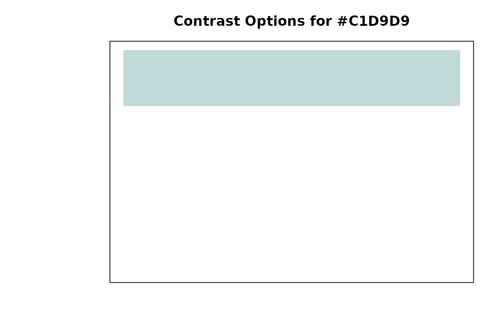

Visualize DST Ressort Contrasts
visualize_dst_contrasts.RdShows visual comparison of DST ressort colors with their contrasting options.
Examples
# Visualize apo ressort contrasts
visualize_dst_contrasts("apo")

#> Warning: supplied color is neither numeric nor character
#> Error in text.default(n_options/2 + 0.5, 1.75, "Background Color", col = contrast_data$contrasts[1], font = 2, cex = 1.2): invalid color specification
# Show all ressorts
visualize_dst_contrasts()
#> Warning: supplied color is neither numeric nor character
#> Error in text.default(n_options/2 + 0.5, 1.75, toupper(ressort_name), col = top_contrasts[1], font = 2, cex = 1): invalid color specification
# Show only high contrast options for sport
visualize_dst_contrasts("sport", contrast_level = "high")
#> Warning: supplied color is neither numeric nor character
#> Error in text.default(n_options/2 + 0.5, 1.75, "Background Color", col = contrast_data$contrasts[1], font = 2, cex = 1.2): invalid color specification